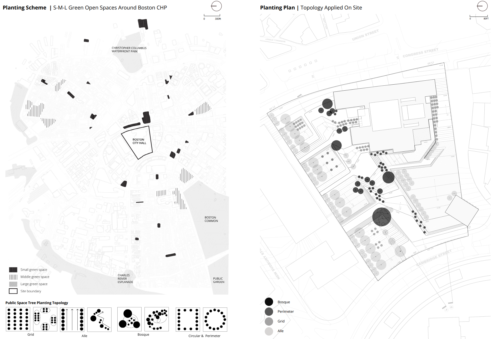
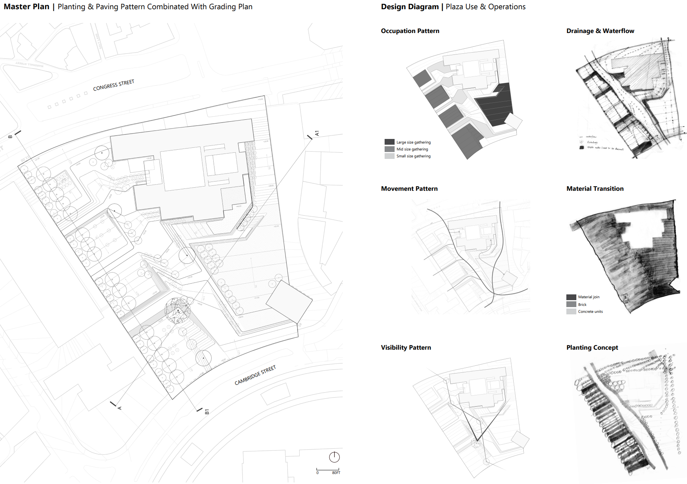
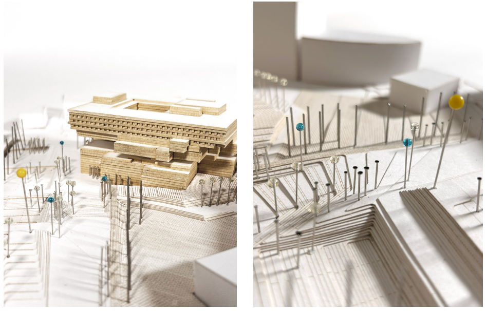

REPROGRAMMING ANTITHESIS
People vote with their feet, especially in Boston, a city known for its extensive and connected green networks. These green spaces work well because of their carefully curated senses of enclosure that allow for different sizes of public gatherings. People decide to stay or leave based on the quality, not the program, of these spaces. This redesign of Boston City Hall Plaza aims to activate the plaza for various forms of gathering activities through different levels of enclosure and openness to create a sense of direction, ease of movement, and space for visual narrative. In an open city diagram, landform, planting, and materiality are tied close together to bring about episodic relationships in open space, which is adaptive and flexible for the public to create the usage and gathering patterns.

Without a preset functional "subdivision" in mind, I asked myself, how could landscape architecture works to create the sense of publicness and urbanity? How to design the form of the space without considering the functionality? Should it be a children's playground placed next to a brutalist government building? The truth is that overprogramming creates rigidity for future. If there aren't as many children as nowadays in the local area, or in wintertime, the playground will be empty. Boston City Hall Plaza is not a good place for public gathering, neither the 1960s nor Sasaki's scheme works for the site.
Green spaces around Boston CHP work well because of their carefully curated senses of enclosure that allow for different sizes of public gatherings (See in planting scheme: S-M-L sizes). I did research on public space tree planting topology, and took the techniques of bosque, perimeter, grid, and Alle planting strategies to the design of CHP.

Imagine you're walking down the bustling Cambridge Street, surrounded by the towering buildings of Boston Government Center. Suddenly, your attention is drawn to a large tree atop a hill in front of you, where people have gathered for a picnic. As you climb the slope, you notice that the pavement underfoot seems to slow your pace. You also notice how the permeability of paving materials change as the slope goes up, for the reason of site drainage. At this point, your gaze towards the City Hall when you see a speaker addressing a crowd at the enlarged Speaker Corner and the largest gathering space. You also observe people coming from Faneuil Hall Marketplace.
You continue down the grassy slope, and ahead, you discover another sunken room. It exudes a sense of privacy, shielded by the surrounding trees. You turn right and, as you move forward, you suddenly notice that the red bricks intermingle with concrete beneath your feet, guiding your sight to the building and block entrance. Rather than enticing you to rush you through the square, several trees with tall trunks along the roadside continuously attract you to linger in the square. And as you approach the far end of the square, you look around and suddenly realize that you are still amid a city enveloped by skyscrapers. What you didn't notice earlier is that the windbreak forest in the north of the square not only creates a better microclimate but also forms a more enclosed and cozy space.
With the design of space, public gathering happens naturally. Landscape architects work on landforms and planting to create conditions for public gathering and left the decision of programming to people. These diagrams just show a hypothetical distribution of people. It can be totally different with the change of climatic environment, the iteration of local population, and the development and redevelopment of the government center. But the plaza will continue to adapt the emerging needs.
